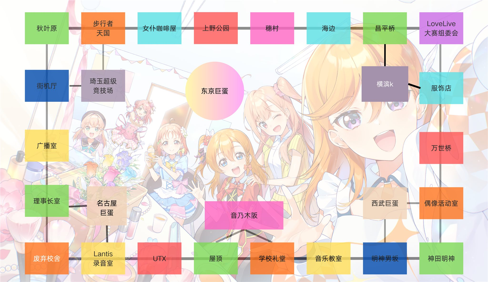

学园偶像大进击！
单机原型 v0.42 · 单机/联机
横屏:关
公告
音乐:开
当前回合：
红方
＋
－

红
蓝
绿
黄
学园偶像大进击！
当前版本 v0.42 · 2026-11-09
【玩法速览 · 30秒上手】
目标：率先成功开办
3 场LIVE
，夺得 LoveLive 大赛冠军！
掷骰移动，停留素材格收集
音乐 / 舞蹈 / 服装
素材，凑齐后点「创作专辑」。
带专辑到LIVE场馆开办演唱会：
2骰 >6
成功进度+1；
东京巨蛋 2骰 >11
进度+2。
事件 / 机遇 / 挑战格抽卡获得增益或干扰对手；【大赛组委会】2张同名素材可换任意1张。
支持单机模式（1v1 对战AI）与 2-4 人联机房；开局随机发放唯一角色技能；行进方向 2 人局自选、3-4 人局系统随机，选定后锁定。
【更新公告】
v0.42 地图架构升级（SVG 渲染层）与格子平衡调整：① 地图格子轮廓、颜色边框、连线、名称文字全部由代码自动绘制，不再依赖底图上固定的格子插画；未来新增/删除/调整格子类型只需改数组，无需重画图；② 格子平衡——挑战格从 2→3（新增屋顶·挑战格，上半圈与下半圈现在各有挑战），休息区从 1→2（新增废弃校舍·休息区，左下也能自选素材），事件格 5→4、机遇格 4→3（从偏多调回均衡）；③ 三类素材格各 3 格保持不变（音乐全在下半圈为已知小瑕疵，后续迭代再挪）；④ 移动端弹窗打开时右侧面板自动浮起并让出位置，可边看弹窗边切换标签页查看自己的素材。
v0.41 移动端界面重构（仅影响手机横屏布局，桌面版与全部玩法数值不变）：① 掷骰栏收窄到地图列宽度，改为三栏——左「创作专辑」、中大圆钮掷骰、右「剩余步数」实时显示；② 右侧面板收窄至约 32%（地图 68%），并从顶栏贯通到屏幕底部，多出约 78px 竖向空间；③ 玩家状态回到右侧面板顶部，每方一行紧凑列表（色点＋名称＋行动中＋进度星＋素材/专辑/角色），当前行动方描边高亮；④ 面板下方改为「素材 / 卡池 / 日志」三个标签页，角色一览并入卡池页；⑤ 底部不再设常驻交易按钮，交易仍仅在停留【LoveLive 大赛组委会】格时触发；⑥ 地图新增双指缩放、＋/－按钮与拖动查看，当前行动棋子脉冲高亮。
v0.40 新机制与新卡：①
安可机制
——LIVE 检定失败后，下次 LIVE 检定 +1；连续两次失败后第三次起 +3（上限 +3，成功兑现后清零；为独立增益，不受任何增益封印/无效化影响）；②
跑圈奖励
——顺时针玩家经过穗村后再次经过屋顶、逆时针玩家经过穗村后再次经过学校礼堂视为完成一圈，可自选 1 张音乐素材（不受任何增益加成）；③
干扰卡加强
——「抢镜」改为指定玩家：下回合不能获得素材且随机丢弃 1 张素材；「对手的背影」改为指定玩家：下回合骰点减半且无法触发格子效果；④ 新事件卡「
来自对手的宣战
」（对手专辑领先时，其下次 LIVE 检定减去双方专辑差）与「
学生会长的否定
」（弃 2 抽 2）；⑤ 新机遇卡「
学园偶像部成立！
」（全员角色卡回池，按落后者优先原则依次重选）。
v0.39 卡牌与技能平衡：①
响彻东京巨蛋吧！
挑战时 LIVE 检定
+1
（失败惩罚不变，风险收益更合理）；②
雨中追加公演
重写——缺少服装素材时可选择立即完成该专辑（正常消耗已有素材），随后进行一次 LIVE 检定（
2骰 > 7
），成功累计胜利进度，失败扣除身上全部服装素材且下回合无法获得素材；③
东条希
占卜平衡：成功改为夺取指定玩家
1 张指定素材
（原为 2 张随机），失败效果不变。
我知道了，开始游戏
事件卡
♪
点击卡片翻开
事件卡
✦ 生效
学园偶像大进击！
LoveLive 大赛主题对战桌游 · 选择模式
联机人数
2人
3人
4人
单机模式 · 对战AI（1v1）
创建房间 · 联机对战（我执红方）
加入房间
🎵 音量设置
BGM
15%
LIVE
20%
骰子
20%
手机画面方向不对？点此切换横/竖屏